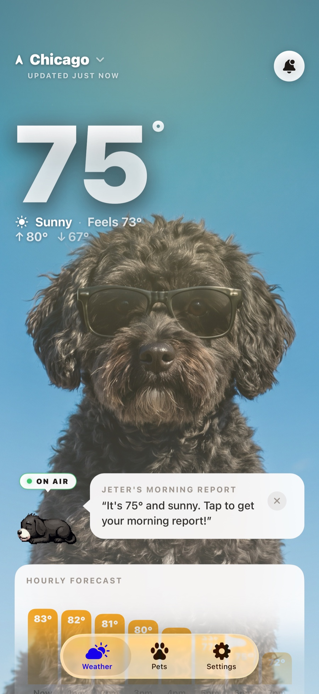

WeatherPets vs Cats & Dogs Weather: Which Should You Download?
If you have searched the App Store for a cute pet weather app, you have probably found both of these. They sound similar on paper, pets plus weather, but they are actually built for two pretty different things. Here is an honest look at what each one is great at, so you can pick the one that fits how you want to use it.
What Cats & Dogs Weather does well
Cats & Dogs Weather, from Fishfinger Media, is a charming little app that wraps a forecast inside a virtual-pet game. You pick a cat or a dog, name it, and then dress it up in weather-appropriate outfits, with thousands of clothing combinations to unlock as you go. There are treats to feed, challenges to complete, levels to climb, and backgrounds to customize. Under all that play, it serves a genuinely detailed forecast: hourly and weekly outlooks, UV index, wind, precipitation chance, sunrise and sunset, even moon phases.
It has earned a loyal following and strong ratings for exactly that reason. If what you want is a collect-and-customize game with a real forecast attached, something to tinker with and dress up, it is a delightful pick. The main things owners keep asking for in reviews are home-screen widgets and a way to earn currency without buying it, since the cosmetic packs and currency are where the in-app purchases live.
What makes WeatherPets different
WeatherPets starts from a different idea. Instead of a generic cartoon cat or dog you dress up, WeatherPets stars your own real pet. You set up your actual dog, cat, guinea pig, or bunny, and the app generates that specific pet, restyled for every weather condition, sunny, rain, snow, storms, and night. The first time you see your own dog delivering the day's forecast, it lands differently than a stock character ever could.

A few things WeatherPets is built around:
- Your pet, not a mascot. The whole experience is your real animal, given a personality, narrating the weather in character.
- Home and lock screen widgets. Your pet plus the weather at a glance, right on your home screen, no need to open the app. This is the feature Cats & Dogs Weather users most often ask for, and it is core to WeatherPets.
- Live Activities. Real-time condition tracking on your lock screen and Dynamic Island, so you stay ahead of changing weather.
- Morning and evening reports. Your pet gives you a short daily briefing, a little dose of joy at the start and end of the day.
- A full 10-day forecast with live tracking, plus a gallery of your pet restyled for each condition and its own profile page.
The short version: WeatherPets is a forecast-first app whose hook is your real pet, designed to be the weather app you actually keep on your home screen. There is no currency to grind and nothing to dress up, the joy comes from seeing your own companion every time you check the sky.
At a glance
Here is the whole comparison in one look.
| Cats & Dogs Weather | WeatherPets | |
|---|---|---|
| Pet on screen | A virtual cat or dog you dress in weather-appropriate outfits | Your real pet, AI-generated into scenes that match the live weather |
| Weather data | Hourly and weekly forecasts with UV, wind, sunrise and sunset, and moon phases | Apple WeatherKit, with a full 10-day forecast |
| Widgets | None yet; the feature owners most often request in reviews | Small, medium, and large home screen widgets starring your pet |
| Play & customization | Outfits, treats, challenges, levels, and backgrounds to unlock | No currency or grinding; your pet restyled for each condition |
| Personality & reports | The charm lives in the dress-up game | Morning and evening reports in your pet's voice |
| Price | Free download; in-app purchases for cosmetic packs and currency | Free download; full features $9.99/mo or $34.99/yr |
| Platforms | iPhone only | iOS 17+ (iPhone) |
The quick version
- Want a dress-up pet game with outfits, treats, levels, and a detailed forecast in the background? Cats & Dogs Weather is made for that.
- Want your real pet to become your daily weather reporter, with widgets and Live Activities you glance at all day? That is WeatherPets.
- Both are cute, both run on iPhone, and both take the boredom out of checking the weather. They just scratch different itches.
Which one is right for you
Choose Cats & Dogs Weather if you love a customization game and enjoy unlocking and collecting. The dress-up loop is the heart of it, and it is a fun way to make a forecast feel playful.
Choose WeatherPets if you want your own dog or cat front and center, and you want the practical stuff too: widgets, Live Activities, and a clean 10-day forecast you will actually use every day. If the idea of your real pet reporting the rain makes you smile, that feeling is the whole product. You can see how the wider category compares in our roundups of the best pet apps for iPhone in 2026 and the best dog weather app for iPhone, and you can find WeatherPets right in the App Store weather category.